Tu mascota necesita ayuda. Nosotros estamos preparados para dársela.
Urgencias veterinarias 24 horas en León. Los 365 días del año.
Cuando una mascota está mal, cada minuto genera más preocupación. Nuestro equipo atiende urgencias veterinarias todos los días del año para que nunca tengas que preguntarte quién puede ayudarte.
Si es una urgencia, llámanos directamente. Si no puedes hacerlo, escríbenos por WhatsApp y confirmaremos tu mensaje inmediatamente.
- Hospitalización y urgencias 24 horas
- Más de 20 años cuidando mascotas en León
- Veterinarios especialistas certificados AVEPA
- Cat Friendly Clinic — nivel Oro
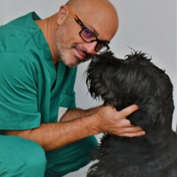
Algunas urgencias no pueden esperar al día siguiente.
- Dificultad para respirar
- Convulsiones
- Atropellos o caídas
- Intoxicaciones
- Hemorragias
- Abdomen muy hinchado
- Dolor intenso
- No puede levantarse
- Ha ingerido un objeto extraño
- Vómitos o diarrea continuos
Ante la duda, llámanos. Es mejor valorar una urgencia que dejar evolucionar un problema grave.
🔴 Llamar ahora¿Qué pasa cuando contactas con nosotros?
Queremos que sepas exactamente qué ocurrirá.
Contactas con nosotros
Por teléfono o por WhatsApp.
Valoramos la situación
Nuestro equipo identifica la prioridad del caso y te indica el siguiente paso.
Actuamos
Si necesita atención inmediata, te diremos cómo proceder sin perder tiempo. Si no es una urgencia, organizaremos la cita más adecuada.
Más de veinte años acompañando a quienes consideran a su mascota parte de la familia.
No solo tratamos enfermedades. Acompañamos a las personas en uno de los momentos que más preocupación generan.
Equipo con especialistas certificados AVEPA
Contamos con veterinarios especializados en distintas áreas para ofrecer una atención completa cuando más importa.
Hospitalización y seguimiento
Cuando una mascota necesita permanecer ingresada, seguimos cuidándola hasta que pueda volver a casa.
No lo decimos nosotros. Lo certifican organismos externos.
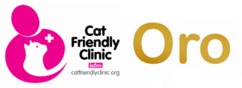
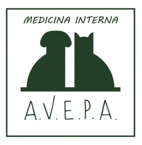
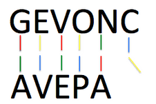
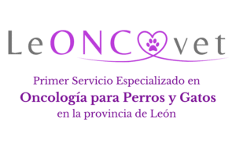
Un equipo real, no una promesa genérica.
Estas son algunas de las personas que forman parte de Centro León.
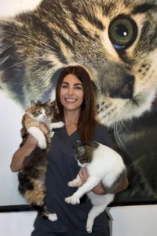
María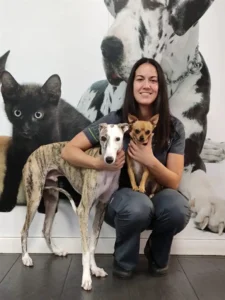
Ana María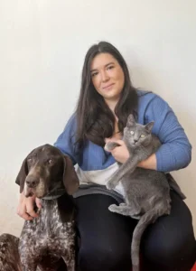
Lidia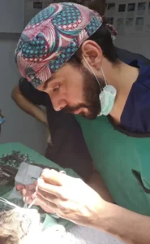
Iván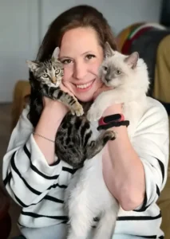
Kati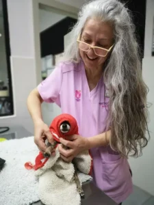
Rosa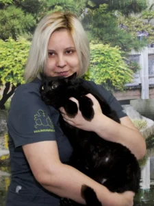
Manuela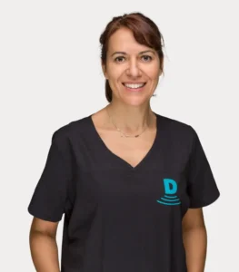
María QuinteroTodo lo que podemos hacer por tu mascota
- Medicina general
- Vacunación
- Revisiones
- Especialidades veterinarias
- Cirugía
- Hospitalización
- Diagnóstico por imagen
- Odontología
- Endoscopia
- Urgencias veterinarias 24 horas
Cuando llamas, no solo buscas un veterinario.
Buscas a alguien que te diga qué hacer. Que valore si puedes esperar o debes venir inmediatamente. Que responda cuando estás preocupado.
Eso es exactamente para lo que estamos aquí.
🔴 Llamar ahora¿No es una urgencia?
También puedes pedir cita fácilmente. Déjanos tus datos y te llamaremos para encontrar el primer hueco disponible.